Comprehensive Bar Chart Analysis with jjbarstats
ClinicoPath Development Team
2025-07-13
Source:vignettes/jjstatsplot-23-jjbarstats-comprehensive.Rmd
jjstatsplot-23-jjbarstats-comprehensive.RmdIntroduction to jjbarstats
The jjbarstats function is a powerful wrapper around the
ggstatsplot package that creates publication-ready bar
charts with automatic statistical testing. This function is designed
specifically for analyzing categorical data relationships in clinical
and research settings.
Key Features
- Automatic Statistical Testing: Performs chi-squared tests, Fisher’s exact tests, or other appropriate tests based on your data
- Multiple Variable Support: Handle single or multiple dependent variables simultaneously
- Grouped Analysis: Split analysis by additional grouping variables
- Flexible Statistical Methods: Choose from parametric, non-parametric, robust, or Bayesian approaches
- Pairwise Comparisons: Automatic post-hoc testing with multiple comparison correction
- Professional Visualization: Publication-ready plots with statistical annotations
When to Use jjbarstats
Use jjbarstats when you need to:
- Compare proportions across different groups
- Analyze treatment effectiveness in clinical trials
- Examine relationships between categorical variables
- Create publication-ready visualizations with statistical tests
- Perform quality improvement analysis
- Analyze survey responses and patient feedback
Basic Usage
Single Dependent Variable Analysis
Let’s start with a basic example using medical study data to compare treatment responses across different treatment groups:
# Basic bar chart comparing treatment response across groups
jjbarstats(
data = medical_study_data,
dep = response,
group = treatment_group,
grvar = NULL
)
#>
#> BAR CHARTS
#>
#> Bar chart analysis comparing response by treatment_group.
This creates a bar chart showing the distribution of treatment responses (Complete Response, Partial Response, No Response) across different treatment groups (Control, Treatment A, Treatment B), along with chi-squared test results.
Advanced Statistical Options
Different Statistical Methods
The function supports four different statistical approaches:
Parametric Analysis (Default)
jjbarstats(
data = patient_satisfaction_data,
dep = satisfaction_level,
group = service_type,
typestatistics = "parametric"
)
#>
#> BAR CHARTS
#>
#> Bar chart analysis comparing satisfaction_level by service_type.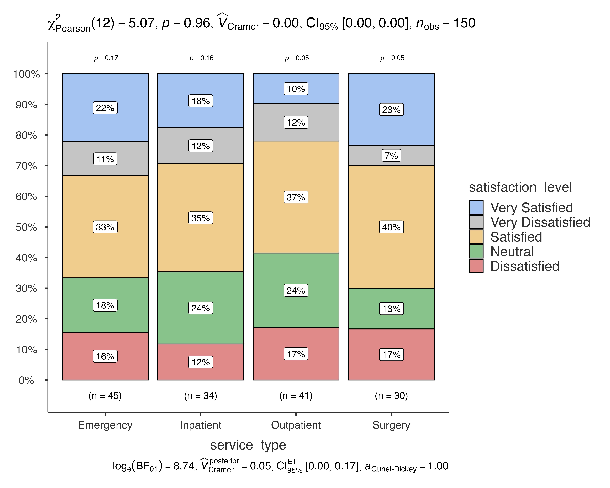
Non-parametric Analysis
jjbarstats(
data = diagnostic_test_data,
dep = test_result,
group = test_method,
typestatistics = "nonparametric"
)
#>
#> BAR CHARTS
#>
#> Bar chart analysis comparing test_result by test_method.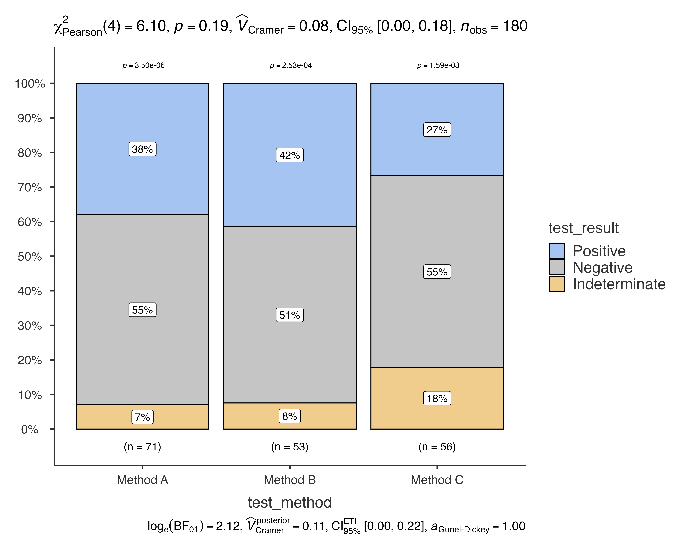
Robust Analysis
jjbarstats(
data = quality_improvement_data,
dep = implementation_status,
group = improvement_category,
typestatistics = "robust"
)
#>
#> BAR CHARTS
#>
#> Bar chart analysis comparing implementation_status by
#> improvement_category.
Bayesian Analysis
jjbarstats(
data = medical_study_data,
dep = severity,
group = treatment_group,
typestatistics = "bayes"
)
#>
#> BAR CHARTS
#>
#> Bar chart analysis comparing severity by treatment_group.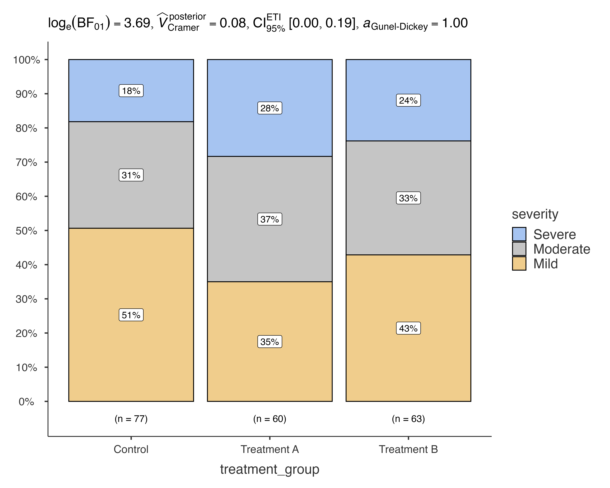
Grouped Analysis with Splitting Variables
Using the grvar Parameter
The grvar parameter allows you to split your analysis by
an additional grouping variable, creating separate plots for each
level:
# Analyze treatment response by treatment group, split by gender
jjbarstats(
data = medical_study_data,
dep = response,
group = treatment_group,
grvar = gender
)
#>
#> BAR CHARTS
#>
#> Bar chart analysis comparing response by treatment_group, grouped by
#> gender.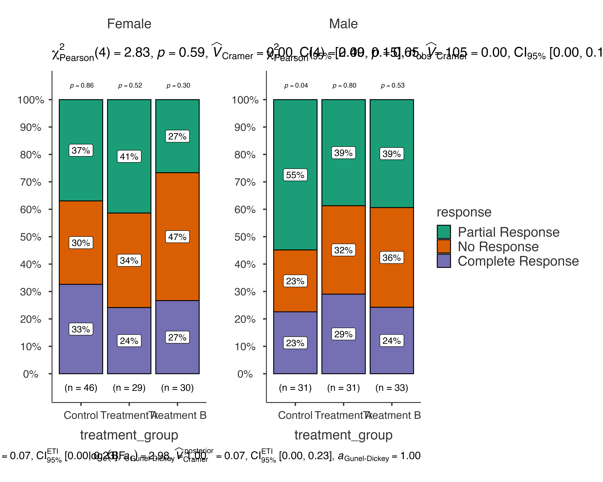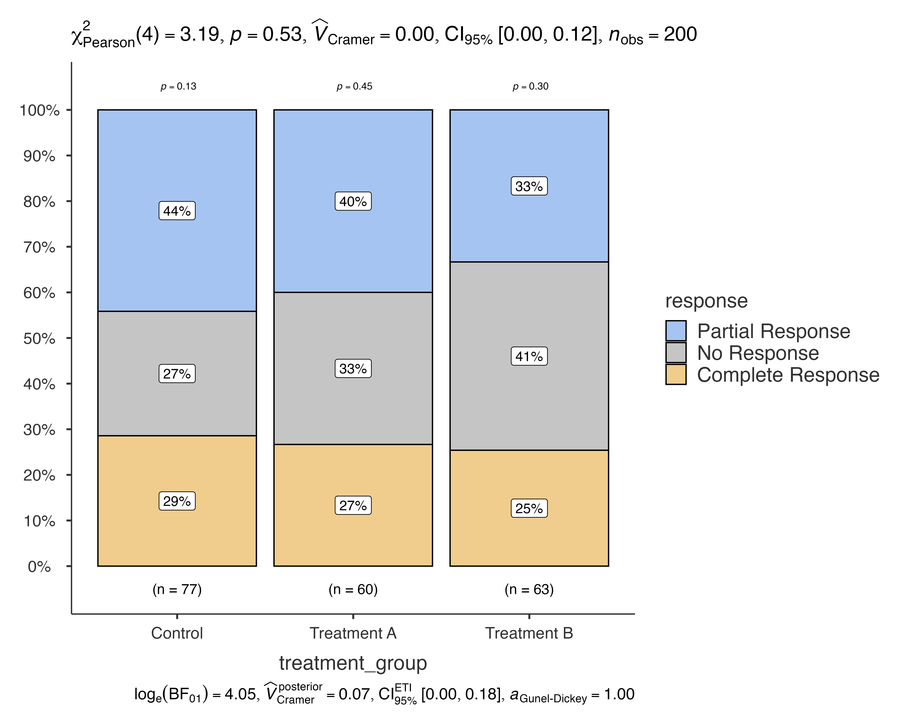
This creates separate bar charts for male and female patients, allowing you to examine whether treatment effects differ by gender.
Complex Grouped Analysis
# Patient satisfaction by service type, split by department
jjbarstats(
data = patient_satisfaction_data,
dep = satisfaction_level,
group = service_type,
grvar = department
)
#>
#> BAR CHARTS
#>
#> Bar chart analysis comparing satisfaction_level by service_type,
#> grouped by department.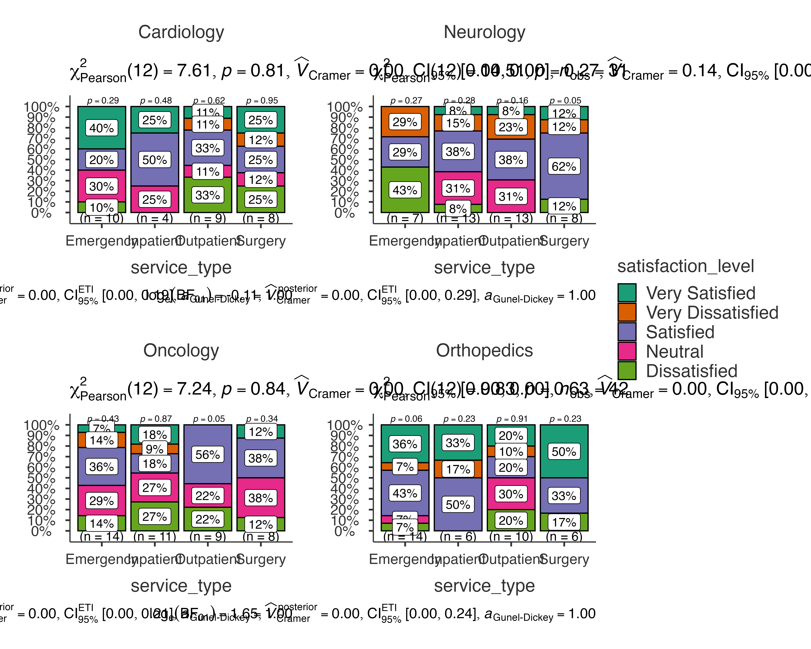
Pairwise Comparisons and Multiple Testing
Enabling Pairwise Comparisons
When you have more than two groups, pairwise comparisons help identify which specific groups differ:
# jjbarstats(
# data = clinical_trial_data,
# dep = primary_outcome,
# group = drug_dosage,
# pairwisecomparisons = TRUE,
# padjustmethod = "holm"
# )Multiple Comparison Correction Methods
Different correction methods are available to control for multiple testing:
# Bonferroni correction (most conservative)
jjbarstats(
data = diagnostic_test_data,
dep = test_result,
group = laboratory,
pairwisecomparisons = TRUE,
padjustmethod = "bonferroni"
)
#>
#> BAR CHARTS
#>
#> Bar chart analysis comparing test_result by laboratory.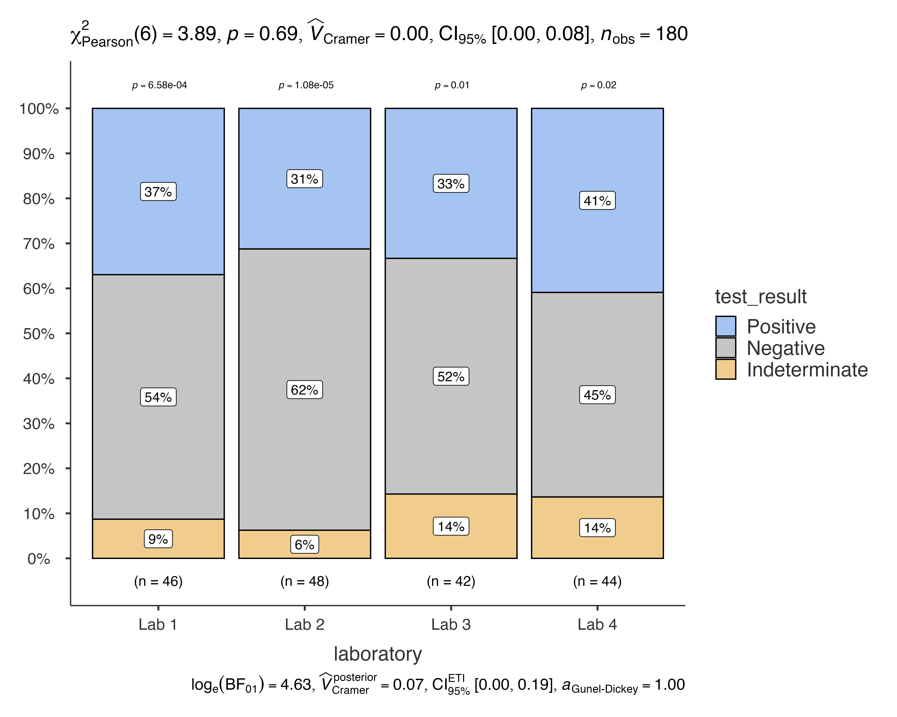
# Benjamini-Hochberg correction (controls false discovery rate)
jjbarstats(
data = quality_improvement_data,
dep = priority_level,
group = department_involved,
pairwisecomparisons = TRUE,
padjustmethod = "BH"
)
#>
#> BAR CHARTS
#>
#> Bar chart analysis comparing priority_level by department_involved.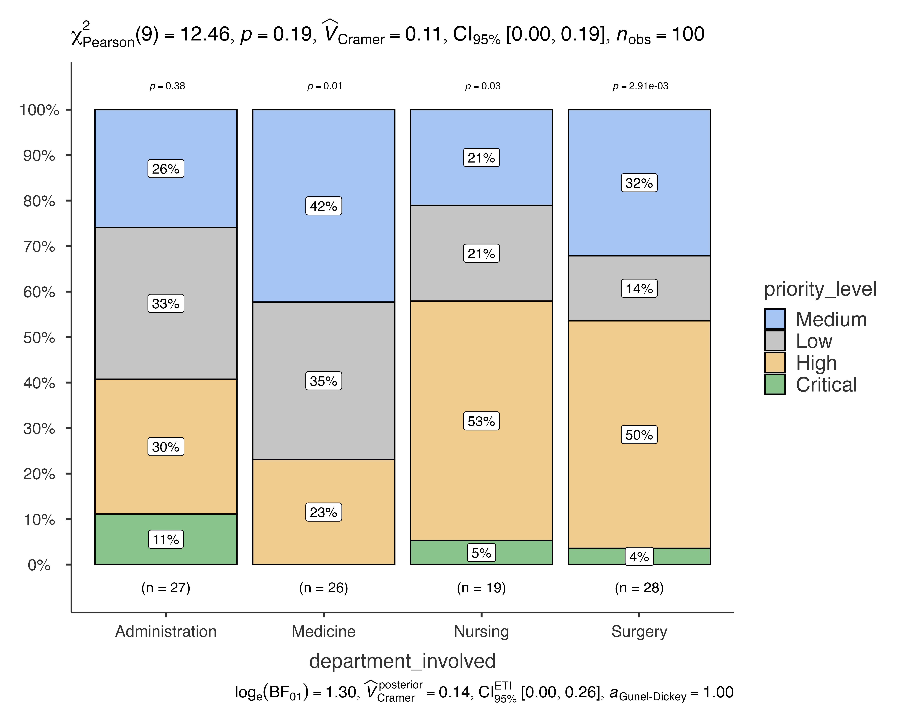
Controlling Pairwise Display
You can control which pairwise comparisons are displayed:
# Show only significant comparisons
jjbarstats(
data = medical_study_data,
dep = response,
group = treatment_group,
pairwisecomparisons = TRUE,
pairwisedisplay = "significant"
)
#>
#> BAR CHARTS
#>
#> Bar chart analysis comparing response by treatment_group.
# Show all comparisons
jjbarstats(
data = patient_satisfaction_data,
dep = staff_rating,
group = service_type,
pairwisecomparisons = TRUE,
pairwisedisplay = "everything"
)
#>
#> BAR CHARTS
#>
#> Bar chart analysis comparing staff_rating by service_type.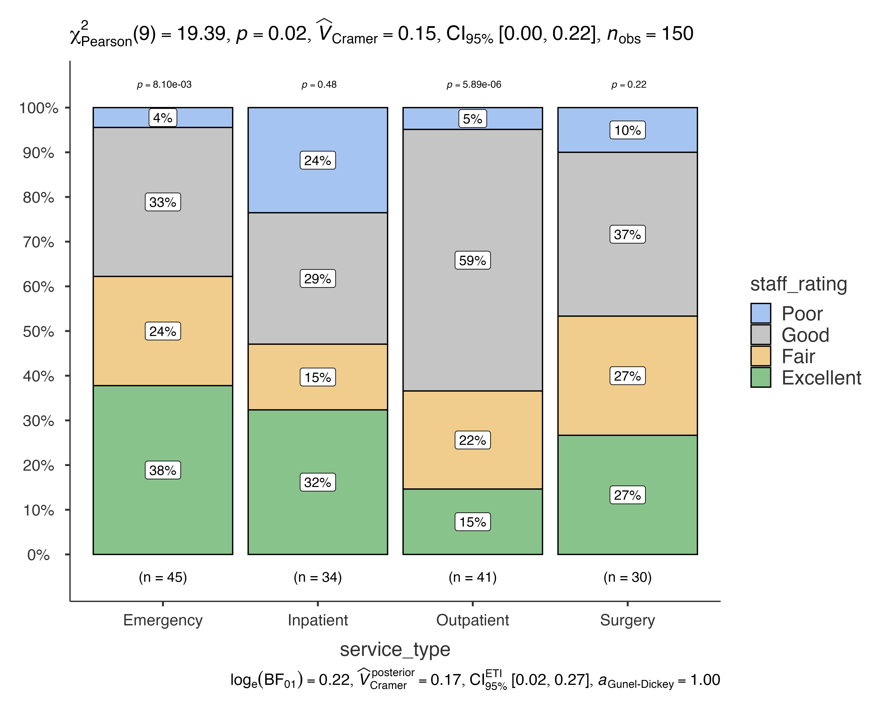
Real-World Clinical Applications
Treatment Efficacy Analysis
Analyzing treatment effectiveness across different patient subgroups:
# Comprehensive treatment analysis
jjbarstats(
data = medical_study_data,
dep = response,
group = treatment_group,
grvar = severity,
typestatistics = "nonparametric",
pairwisecomparisons = TRUE,
padjustmethod = "BH"
)
#>
#> BAR CHARTS
#>
#> Bar chart analysis comparing response by treatment_group, grouped by
#> severity.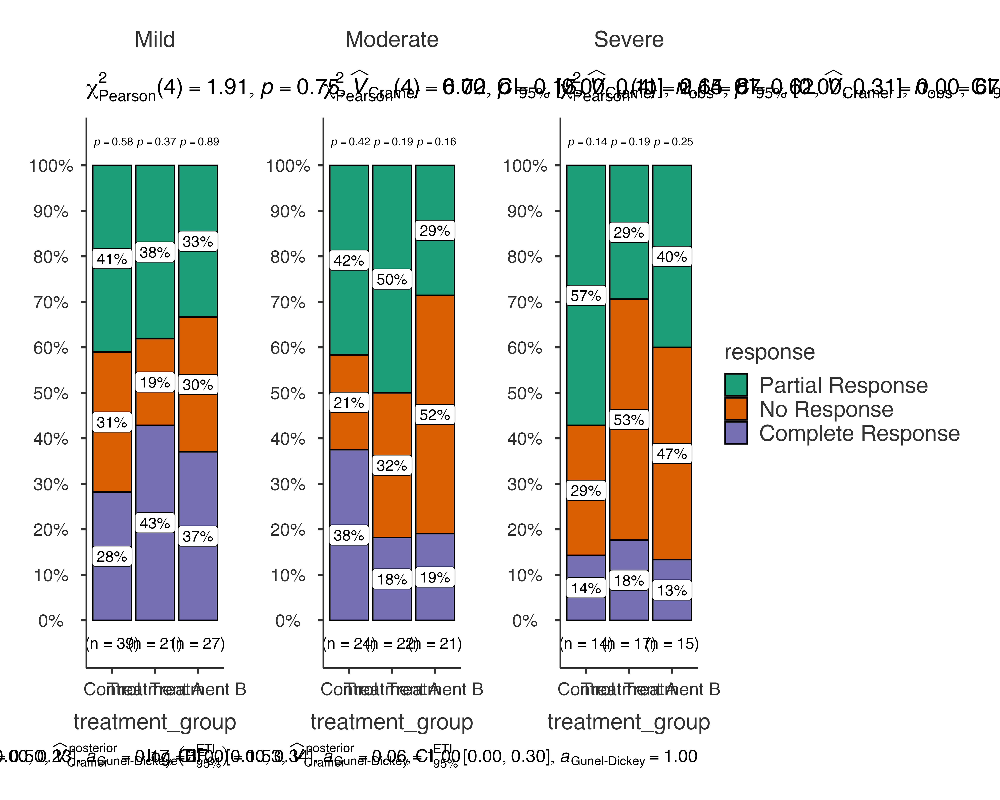
Quality Improvement Analysis
Tracking implementation status across different improvement categories:
jjbarstats(
data = quality_improvement_data,
dep = c(implementation_status, priority_level),
group = improvement_category,
typestatistics = "parametric",
pairwisecomparisons = TRUE
)
#>
#> BAR CHARTS
#>
#> Bar chart analysis comparing implementation_status, priority_level by
#> improvement_category.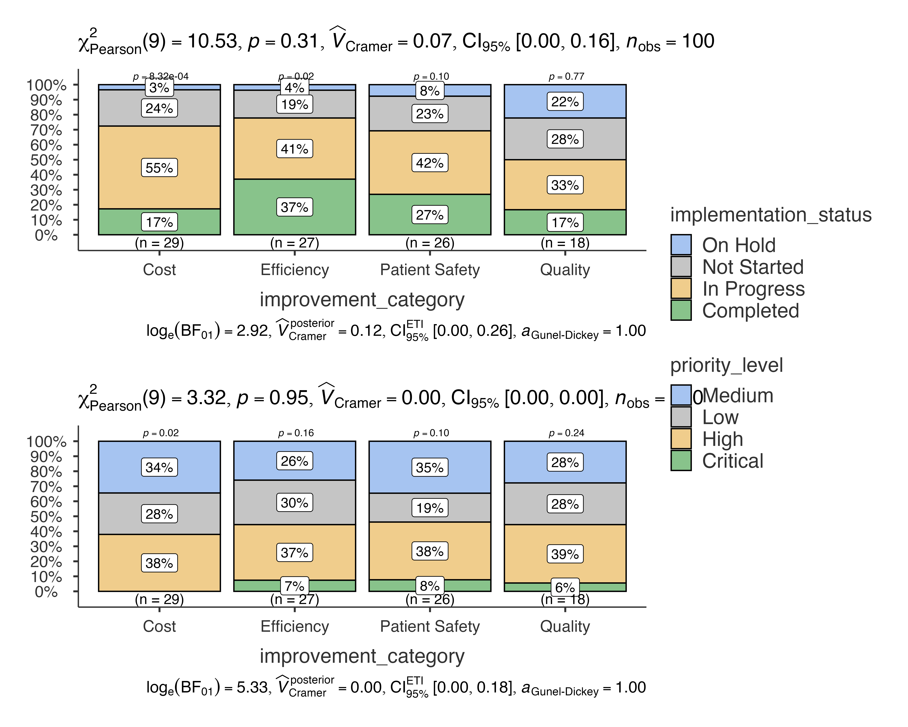
Diagnostic Test Evaluation
Comparing test performance across different methods and laboratories:
jjbarstats(
data = diagnostic_test_data,
dep = test_result,
group = test_method,
grvar = laboratory,
typestatistics = "robust",
pairwisecomparisons = TRUE,
pairwisedisplay = "significant"
)
#>
#> BAR CHARTS
#>
#> Bar chart analysis comparing test_result by test_method, grouped by
#> laboratory.
Patient Satisfaction Survey Analysis
Analyzing satisfaction levels across different service types and departments:
jjbarstats(
data = patient_satisfaction_data,
dep = satisfaction_level,
group = service_type,
grvar = department,
typestatistics = "nonparametric",
pairwisecomparisons = TRUE,
padjustmethod = "holm"
)
#>
#> BAR CHARTS
#>
#> Bar chart analysis comparing satisfaction_level by service_type,
#> grouped by department.
Working with Real Histopathology Data
Using the histopathology dataset that comes with ClinicoPath:
# Analyze lymphovascular invasion by treatment group
jjbarstats(
data = histopathology,
dep = LVI,
group = Group,
typestatistics = "nonparametric",
pairwisecomparisons = TRUE
)
#>
#> BAR CHARTS
#>
#> Bar chart analysis comparing LVI by Group.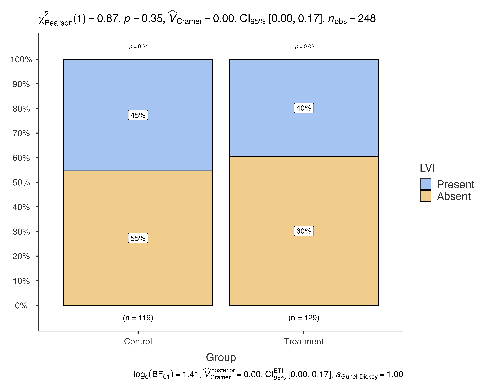
# Multiple outcome analysis
jjbarstats(
data = histopathology,
dep = c(LVI, PNI),
group = Grade_Level,
typestatistics = "parametric"
)
#>
#> BAR CHARTS
#>
#> Bar chart analysis comparing LVI, PNI by Grade_Level.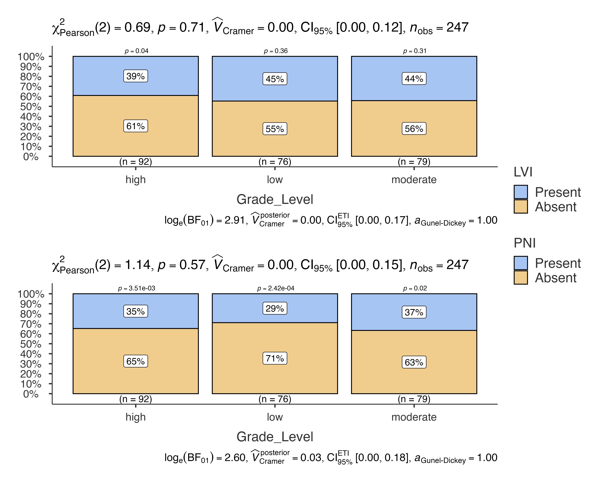
# Grouped analysis by sex
jjbarstats(
data = histopathology,
dep = LymphNodeMetastasis,
group = Grade_Level,
grvar = Sex,
typestatistics = "robust",
pairwisecomparisons = TRUE
)
#>
#> BAR CHARTS
#>
#> Bar chart analysis comparing LymphNodeMetastasis by Grade_Level,
#> grouped by Sex.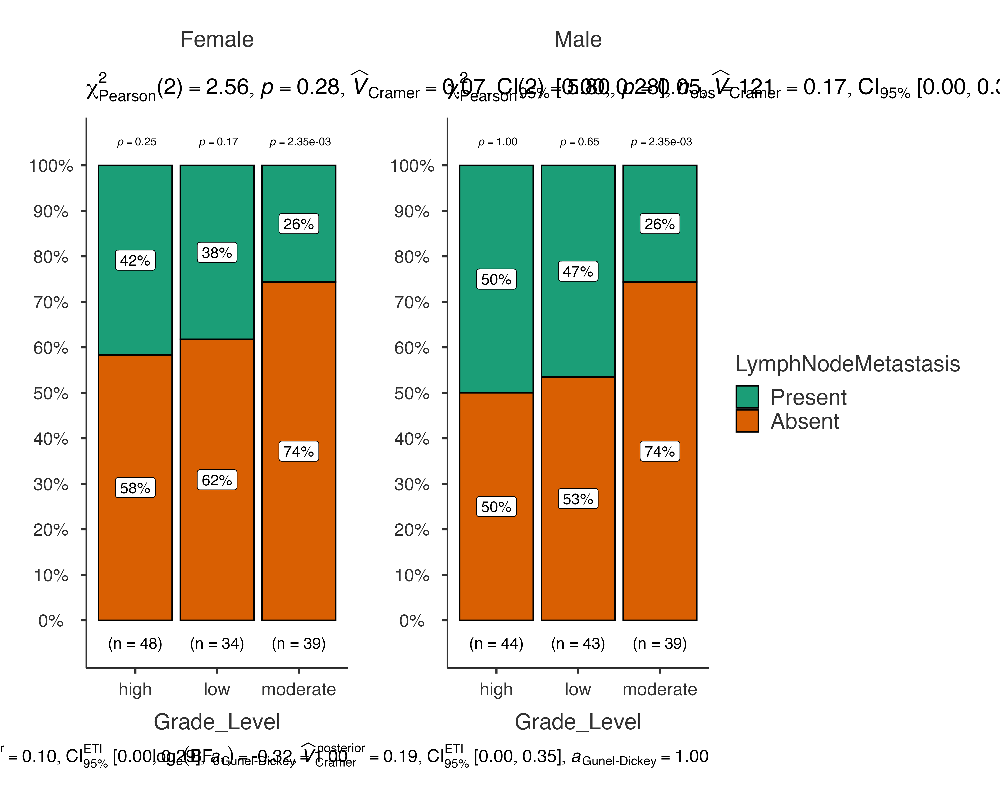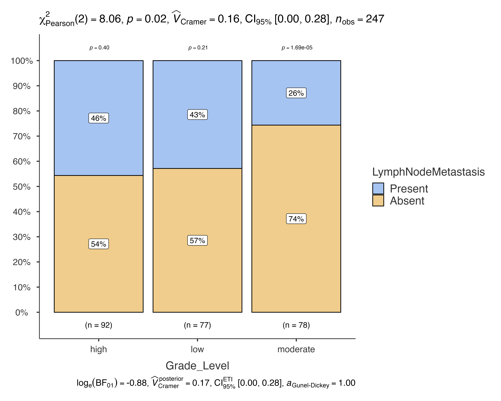
Customization and Theming
Using Original ggstatsplot Theme
jjbarstats(
data = medical_study_data,
dep = response,
group = treatment_group,
originaltheme = TRUE
)
#>
#> BAR CHARTS
#>
#> Bar chart analysis comparing response by treatment_group.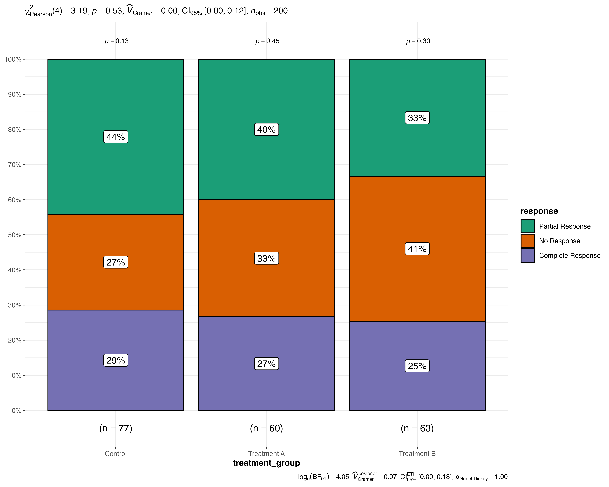
Best Practices and Recommendations
Statistical Method Selection
- Parametric: Use when data meets assumptions (large sample sizes, expected frequencies ≥ 5)
- Non-parametric: Default choice for categorical data, fewer assumptions
- Robust: Good middle ground, less sensitive to outliers
- Bayesian: When you want to incorporate prior knowledge or report Bayes factors
Multiple Comparison Correction
- Holm: Good balance between power and Type I error control
- Bonferroni: Most conservative, use when Type I error is critical
- BH (Benjamini-Hochberg): Controls false discovery rate, good for exploratory analysis
- None: Only when you have specific a priori hypotheses
Sample Size Considerations
- Chi-squared tests require expected frequencies ≥ 5 in each cell
- Fisher’s exact test is automatically used for small samples
- Consider effect sizes, not just p-values
Data Preparation Tips
# Ensure categorical variables are properly formatted
medical_study_clean <- medical_study_data %>%
mutate(
treatment_group = factor(treatment_group,
levels = c("Control", "Treatment A", "Treatment B")),
response = factor(response,
levels = c("No Response", "Partial Response", "Complete Response"))
)
# Verify factor levels
str(medical_study_clean[c("treatment_group", "response")])
#> 'data.frame': 200 obs. of 2 variables:
#> $ treatment_group: Factor w/ 3 levels "Control","Treatment A",..: 2 2 1 3 3 1 1 1 1 3 ...
#> $ response : Factor w/ 3 levels "No Response",..: 1 1 1 2 1 3 2 1 3 1 ...Troubleshooting Common Issues
Issue 1: Empty Cells or Small Counts
When you have empty cells or very small counts, the function automatically switches to appropriate tests:
# Create data with small counts
small_sample <- medical_study_data[1:20, ]
jjbarstats(
data = small_sample,
dep = response,
group = treatment_group,
typestatistics = "nonparametric"
)
#>
#> BAR CHARTS
#>
#> Bar chart analysis comparing response by treatment_group.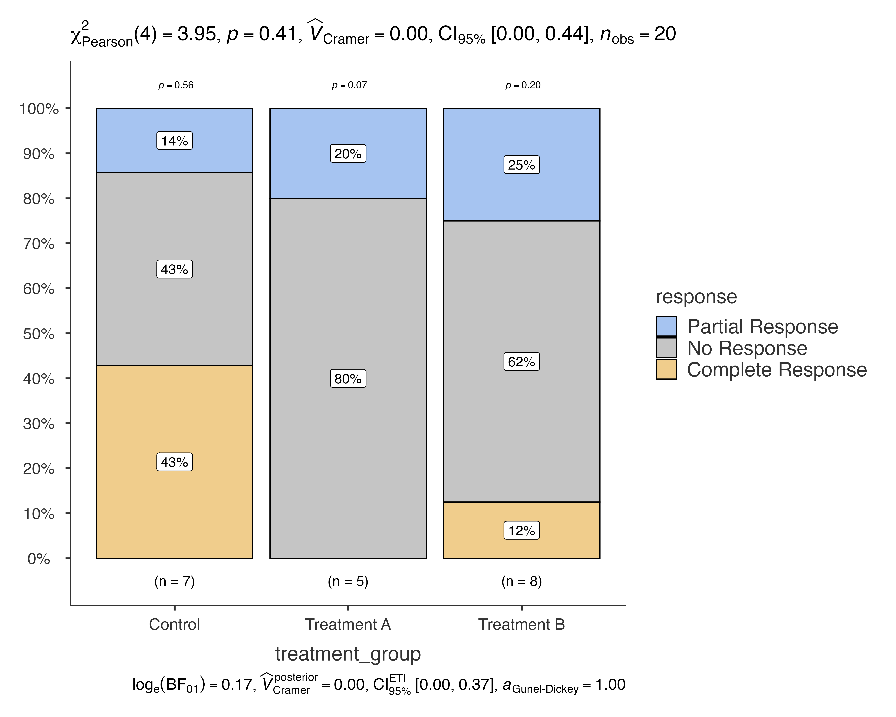
Issue 2: Too Many Categories
When you have many categories, consider grouping or using different visualization:
# Example with multiple categories
jjbarstats(
data = patient_satisfaction_data,
dep = satisfaction_level,
group = department,
pairwisecomparisons = FALSE # Disable pairwise for clarity
)
#>
#> BAR CHARTS
#>
#> Bar chart analysis comparing satisfaction_level by department.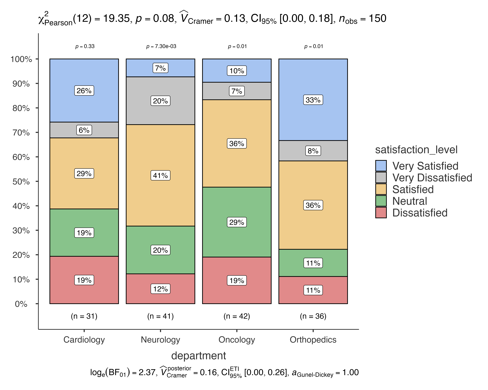
Issue 3: Missing Data
The function automatically handles missing data when
excl = TRUE (default):
# Demonstrate missing data handling
data_with_na <- medical_study_data
data_with_na$response[1:5] <- NA
jjbarstats(
data = data_with_na,
dep = response,
group = treatment_group,
excl = TRUE # Exclude missing values
)
#>
#> BAR CHARTS
#>
#> Bar chart analysis comparing response by treatment_group.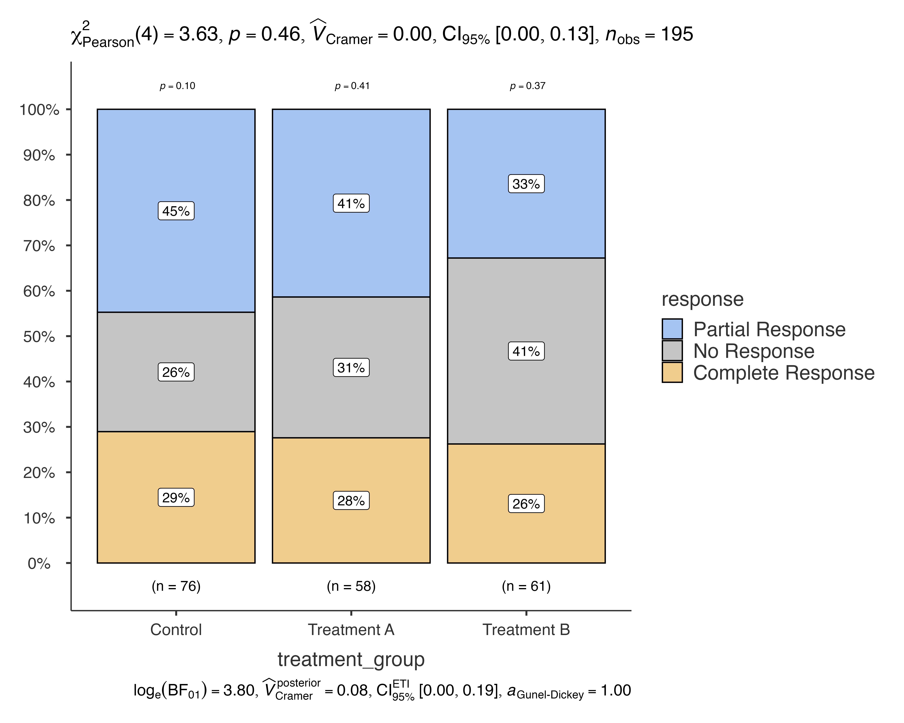
Interpretation Guidelines
Understanding the Statistical Output
- Chi-squared test: Tests independence between categorical variables
- Effect size (Cramér’s V): Measures strength of association (0 = no association, 1 = perfect association)
- Confidence intervals: Provide range of plausible values for the effect
- Pairwise comparisons: Show which specific groups differ
Clinical Significance vs Statistical Significance
- Always consider clinical relevance alongside statistical significance
- Effect sizes help interpret practical importance
- Confidence intervals provide information about precision
Reporting Results
When reporting results from jjbarstats:
- Describe the statistical test used (chi-squared, Fisher’s exact, etc.)
- Report effect size (Cramér’s V) and confidence intervals
- Mention multiple comparison correction if applicable
- Provide sample sizes for each group
- Include the actual plot in your publication
Advanced Examples
Multi-stage Analysis Workflow
# Step 1: Overall analysis
# overall_result <- jjbarstats(
# data = clinical_trial_data,
# dep = primary_outcome,
# group = drug_dosage,
# typestatistics = "nonparametric",
# pairwisecomparisons = TRUE,
# padjustmethod = "BH"
# )
# Step 2: Subgroup analysis by study phase
# subgroup_result <- jjbarstats(
# data = clinical_trial_data,
# dep = primary_outcome,
# group = drug_dosage,
# grvar = study_phase,
# typestatistics = "nonparametric",
# pairwisecomparisons = TRUE
# )Conclusion
The jjbarstats function provides a comprehensive
solution for categorical data analysis in clinical and research
settings. Its integration with the ggstatsplot ecosystem
ensures both statistical rigor and visual appeal, making it an excellent
choice for:
- Clinical trial analysis
- Quality improvement studies
- Survey research
- Diagnostic test evaluation
- Healthcare outcomes research
The function’s flexibility in statistical methods, multiple comparison corrections, and visualization options makes it suitable for both exploratory and confirmatory analysis phases of research projects.
Further Resources
- ggstatsplot documentation
- ClinicoPath package documentation
- Statistical methods references for categorical data analysis
Session Information
sessionInfo()
#> R version 4.5.1 (2025-06-13)
#> Platform: aarch64-apple-darwin20
#> Running under: macOS Sequoia 15.5
#>
#> Matrix products: default
#> BLAS: /Library/Frameworks/R.framework/Versions/4.5-arm64/Resources/lib/libRblas.0.dylib
#> LAPACK: /Library/Frameworks/R.framework/Versions/4.5-arm64/Resources/lib/libRlapack.dylib; LAPACK version 3.12.1
#>
#> locale:
#> [1] en_US.UTF-8/en_US.UTF-8/en_US.UTF-8/C/en_US.UTF-8/en_US.UTF-8
#>
#> time zone: Europe/Istanbul
#> tzcode source: internal
#>
#> attached base packages:
#> [1] stats graphics grDevices utils datasets methods base
#>
#> other attached packages:
#> [1] dplyr_1.1.4 ggplot2_3.5.2 ClinicoPath_0.0.3.55
#>
#> loaded via a namespace (and not attached):
#> [1] igraph_2.1.4 plotly_4.11.0 Formula_1.2-5
#> [4] cutpointr_1.2.1 rematch2_2.1.2 timeROC_0.4
#> [7] tidyselect_1.2.1 vtree_5.1.9 lattice_0.22-7
#> [10] stringr_1.5.1 lgr_0.4.4 parallel_4.5.1
#> [13] caret_7.0-1 dichromat_2.0-0.1 correlation_0.8.8
#> [16] png_0.1-8 cli_3.6.5 bayestestR_0.16.1
#> [19] askpass_1.2.1 arsenal_3.6.3 openssl_2.3.3
#> [22] ggeconodist_0.1.0 countrycode_1.6.1 pkgdown_2.1.3
#> [25] textshaping_1.0.1 paradox_1.0.1 purrr_1.0.4
#> [28] officer_0.6.10 naivebayes_1.0.0 stars_0.6-8
#> [31] broom.mixed_0.2.9.6 ggflowchart_1.0.0 ggoncoplot_0.1.0
#> [34] curl_6.4.0 strucchange_1.5-4 mime_0.13
#> [37] evaluate_1.0.4 coin_1.4-3 V8_6.0.4
#> [40] stringi_1.8.7 pROC_1.18.5 backports_1.5.0
#> [43] desc_1.4.3 mlr3extralearners_1.0.0 lmerTest_3.1-3
#> [46] XML_3.99-0.18 Exact_3.3 tinytable_0.10.0
#> [49] lubridate_1.9.4 httpuv_1.6.16 mlr3viz_0.10.1
#> [52] paletteer_1.6.0 magrittr_2.0.3 rappdirs_0.3.3
#> [55] splines_4.5.1 prodlim_2025.04.28 r2rtf_1.1.4
#> [58] KMsurv_0.1-6 BiasedUrn_2.0.12 survminer_0.5.0
#> [61] logger_0.4.0 epiR_2.0.84 wk_0.9.4
#> [64] palmerpenguins_0.1.1 networkD3_0.4.1 finalfit_1.0.8
#> [67] DT_0.33 lpSolve_5.6.23 rootSolve_1.8.2.4
#> [70] DBI_1.2.3 terra_1.8-54 jquerylib_0.1.4
#> [73] withr_3.0.2 reformulas_0.4.1 class_7.3-23
#> [76] systemfonts_1.2.3 lmtest_0.9-40 rprojroot_2.0.4
#> [79] leaflegend_1.2.1 RefManageR_1.4.0 htmlwidgets_1.6.4
#> [82] fs_1.6.6 waffle_1.0.2 ggvenn_0.1.10
#> [85] gtsummary_2.3.0 cellranger_1.1.0 summarytools_1.1.4
#> [88] extrafont_0.19 lmom_3.2 effectsize_1.0.1
#> [91] zoo_1.8-14 raster_3.6-32 knitr_1.50
#> [94] ggcharts_0.2.1 gt_1.0.0 timechange_0.3.0
#> [97] foreach_1.5.2 dcurves_0.5.0 patchwork_1.3.1
#> [100] visNetwork_2.1.2 grid_4.5.1 data.table_1.17.8
#> [103] timeDate_4041.110 gsDesign_3.6.9 pan_1.9
#> [106] quantreg_6.1 psych_2.5.6 extrafontdb_1.0
#> [109] DiagrammeR_1.0.11 clintools_0.9.10.1 DescTools_0.99.60
#> [112] lazyeval_0.2.2 yaml_2.3.10 leaflet_2.2.2
#> [115] easyalluvial_0.3.2 useful_1.2.6.1 survival_3.8-3
#> [118] crosstable_0.8.1 lwgeom_0.2-14 crayon_1.5.3
#> [121] RColorBrewer_1.1-3 tidyr_1.3.1 progressr_0.15.1
#> [124] tweenr_2.0.3 later_1.4.2 jtools_2.3.0
#> [127] microbenchmark_1.5.0 ggridges_0.5.6 mlr3measures_1.0.0
#> [130] codetools_0.2-20 base64enc_0.1-3 labelled_2.14.1
#> [133] shape_1.4.6.1 estimability_1.5.1 gdtools_0.4.2
#> [136] data.tree_1.1.0 foreign_0.8-90 pkgconfig_2.0.3
#> [139] grafify_5.0.0.1 xml2_1.3.8 ggpubr_0.6.1
#> [142] performance_0.15.0 viridisLite_0.4.2 xtable_1.8-4
#> [145] bibtex_0.5.1 car_3.1-3 plyr_1.8.9
#> [148] httr_1.4.7 rbibutils_2.3 tools_4.5.1
#> [151] globals_0.18.0 hardhat_1.4.1 cols4all_0.8
#> [154] htmlTable_2.4.3 broom_1.0.8 checkmate_2.3.2
#> [157] nlme_3.1-168 MatrixModels_0.5-4 regions_0.1.8
#> [160] survMisc_0.5.6 maptiles_0.10.0 crosstalk_1.2.1
#> [163] assertthat_0.2.1 lme4_1.1-37 digest_0.6.37
#> [166] numDeriv_2016.8-1.1 Matrix_1.7-3 tmap_4.1
#> [169] furrr_0.3.1 farver_2.1.2 tzdb_0.5.0
#> [172] reshape2_1.4.4 viridis_0.6.5 pec_2023.04.12
#> [175] rapportools_1.2 gghalves_0.1.4 ModelMetrics_1.2.2.2
#> [178] crul_1.5.0 rpart_4.1.24 glue_1.8.0
#> [181] mice_3.18.0 cachem_1.1.0 ggswim_0.1.0
#> [184] polyclip_1.10-7 UpSetR_1.4.0 Hmisc_5.2-3
#> [187] generics_0.1.4 visdat_0.6.0 classInt_0.4-11
#> [190] stats4_4.5.1 ggalluvial_0.12.5 mvtnorm_1.3-3
#> [193] survey_4.4-2 powerSurvEpi_0.1.5 ggfortify_0.4.18
#> [196] parallelly_1.45.0 ISOweek_0.6-2 mnormt_2.1.1
#> [199] ggmice_0.1.0 here_1.0.1 ragg_1.4.0
#> [202] pbapply_1.7-2 fontBitstreamVera_0.1.1 carData_3.0-5
#> [205] minqa_1.2.8 httr2_1.1.2 giscoR_0.6.1
#> [208] tcltk_4.5.1 rpart.plot_3.1.2 coefplot_1.2.8
#> [211] eurostat_4.0.0 glmnet_4.1-9 jmvcore_2.6.3
#> [214] spacesXYZ_1.6-0 gower_1.0.2 mitools_2.4
#> [217] readxl_1.4.5 datawizard_1.1.0 httpcode_0.3.0
#> [220] fontawesome_0.5.3 ggsignif_0.6.4 timereg_2.0.6
#> [223] party_1.3-18 gridExtra_2.3 shiny_1.11.1
#> [226] lava_1.8.1 tmaptools_3.2 parameters_0.27.0
#> [229] arcdiagram_0.1.12 rmarkdown_2.29 TidyDensity_1.5.0
#> [232] pander_0.6.6 mlr3misc_0.18.0 scales_1.4.0
#> [235] gld_2.6.7 svglite_2.2.1 future_1.58.0
#> [238] fontLiberation_0.1.0 DiagrammeRsvg_0.1 ggpp_0.5.9
#> [241] km.ci_0.5-6 rstudioapi_0.17.1 janitor_2.2.1
#> [244] cluster_2.1.8.1 rstantools_2.4.0 hms_1.1.3
#> [247] anytime_0.3.11 colorspace_2.1-1 rlang_1.1.6
#> [250] jomo_2.7-6 s2_1.1.9 pivottabler_1.5.6
#> [253] ipred_0.9-15 ggforce_0.5.0 kknn_1.4.1
#> [256] mgcv_1.9-3 xfun_0.52 coda_0.19-4.1
#> [259] e1071_1.7-16 TH.data_1.1-3 modeltools_0.2-24
#> [262] matrixStats_1.5.0 benford.analysis_0.1.5 recipes_1.3.1
#> [265] iterators_1.0.14 emmeans_1.11.1 randomForest_4.7-1.2
#> [268] abind_1.4-8 tibble_3.3.0 libcoin_1.0-10
#> [271] ggrain_0.0.4 readr_2.1.5 Rdpack_2.6.4
#> [274] promises_1.3.3 sandwich_3.1-1 proxy_0.4-27
#> [277] compiler_4.5.1 statsExpressions_1.7.0 forcats_1.0.0
#> [280] leaflet.providers_2.0.0 boot_1.3-31 distributional_0.5.0
#> [283] tableone_0.13.2 SparseM_1.84-2 polynom_1.4-1
#> [286] listenv_0.9.1 Rcpp_1.1.0 Rttf2pt1_1.3.12
#> [289] fontquiver_0.2.1 DataExplorer_0.8.3 datefixR_1.7.0
#> [292] rms_8.0-0 units_0.8-7 MASS_7.3-65
#> [295] uuid_1.2-1 insight_1.3.1 R6_2.6.1
#> [298] fastmap_1.2.0 multcomp_1.4-28 rstatix_0.7.2
#> [301] BayesFactor_0.9.12-4.7 vcd_1.4-13 ggstatsplot_0.13.1
#> [304] mitml_0.4-5 ggdist_3.3.3 nnet_7.3-20
#> [307] gtable_0.3.6 leafem_0.2.4 KernSmooth_2.23-26
#> [310] miniUI_0.1.2 irr_0.84.1 gtExtras_0.6.0
#> [313] htmltools_0.5.8.1 tidyplots_0.3.1.9000 leafsync_0.1.0
#> [316] RcppParallel_5.1.10 polspline_1.1.25 lifecycle_1.0.4
#> [319] sf_1.0-21 zip_2.3.3 kableExtra_1.4.0
#> [322] pryr_0.1.6 nloptr_2.2.1 mlr3_1.0.1
#> [325] mlr3learners_0.12.0 sass_0.4.10 vctrs_0.6.5
#> [328] zeallot_0.2.0 snakecase_0.11.1 flextable_0.9.9
#> [331] rcrossref_1.2.0 haven_2.5.5 sp_2.2-0
#> [334] pracma_2.4.4 future.apply_1.20.0 bslib_0.9.0
#> [337] pillar_1.11.0 prismatic_1.1.2 magick_2.8.7
#> [340] moments_0.14.1 jsonlite_2.0.0 expm_1.0-0